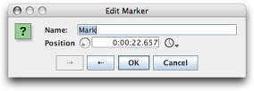
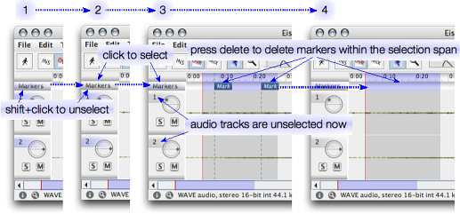

This axis shows all markers of the sound file. Its visibility can be toggled from the view menu. You can create a marker by double-clicking somewhere on a free spot on the axis. Pressing keyboard M will drop a marker at the current timeline position. To move a marker, press the mouse button over a its name and drag it around. You can erase a marker with Alt+Click on the its name. You can insert a new marker by double-clicking on a free spot on the axis.
Double clicking on a markers name in the axis will open the marker dialog where you can textually edit the markers name and its exact position.
By default, the marker axis' track is selected just as all audio channels' tracks. That implies that markers are included in cut/copy/paste applications. You should be aware, that you can do pure marker manipulations by deselecting all tracks except the markers track. To solely select the marker track, you can Shift+Click on the marker track's header to deselect it first, and then click again on it to select none but the marker track, as indicated by the following illustration:
Note that when hitting delete in the fourth step, the effect depends on the currently chosen edit mode: In overwrite or mix mode, the markers are just removed without affecting successive markers. In insert mode, the markers right to the selected span will get shifted to left by the duration of the selection span, so as if the actual time span of the selection would be removed.
In the same matter, just the marker track can be copied from one document to another. To add the markers from the clipboard to the current set of markers, the mix edit mode has to be chosen. On the other hand, if you wish to copy just the audio tracks, make sure to unselect the marker track before executing the paste operation.
Marker retrieval and storage is currently supported only with AIFF and WAVE files. Markers are lost when saving to other file formats (such as Snd/AU). When using multi-mono files, markers are read and written to the first channel's file.
You can exclude the markers from a save operation by unselecting the markers track and making the selection span as big as the whole document (Edit->Select All). Then choosing File->Save Selection As will save the audio tracks but not the marker track into a new file.
The current OSC interface defines an address to access the markers of each document, so you can programmatically read and write markers using for example the SuperCollider client.